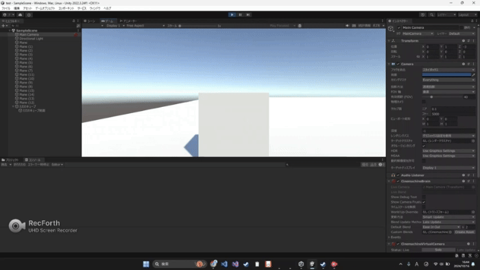

[unity3D]TPSカメラの方向を基に移動操作する超シンプルなコード例を紹介！！
TPSのキャラ移動操作をプログラミングする時、もっとシンプルに分かりやすく書けないかなと思い、色々試行錯誤してみました
その経験を皆さんと共有できれば思い、この記事を書くことにしました
ちなみに、使用しているUnityのバージョンは「2022.3.24f1」です
コード例
using UnityEngine;
public class PlayerController2 : MonoBehaviour
{
protected float speed = 0.1f; //移動速度
void Start()
{
}
//angleは移動方向を度数で指定
//moveAmountは移動量。
void Run(float angle, float moveAmount)
{
//カメラ向きの角度取得
Vector3 cameraAngle = Camera.main.transform.localEulerAngles;
//カメラの向きを基準に、プライヤーの向きを引数angle分回転
transform.localEulerAngles = new Vector3(0, cameraAngle.y + angle, 0);
//プレイヤーの向いてる方向に引数moveAmmountだけ移動
transform.Translate(0, 0, moveAmount);
}
void Update()
{
//押されたキー取得
bool w = Input.GetKey(KeyCode.W);
bool a = Input.GetKey(KeyCode.A);
bool s = Input.GetKey(KeyCode.S);
bool d = Input.GetKey(KeyCode.D);
//押されたキーに応じた方向に移動
if (w && d) Run(45, speed); //右上
else if (w && a) Run(-45, speed); //左上
else if (s && d) Run(135, speed); //右下
else if (s && a) Run(-135, speed); //左下
else if (w) Run(0, speed); //上
else if (s) Run(180, speed); //下
else if (a) Run(-90, speed); //左
else if (d) Run(90, speed); //右
}
}
以上のコードを記述した「PlayerController.cs」ファイルを作り、操作したいキャラに追加すると以下のようになります

解説
Update関数
1. 押されたキーを取得
2. 押されたキーに応じて、run関数の引数にわたす値を変える
以上がUpdate関数でやっていることです
Run関数
コメントに書いてある通り
1. カメラ向きの角度取得
2. カメラの向きを基準に、プレイヤーの向きを引数angle分回転
3. プレイヤーの向いてる方向に引数moveAmmountだけ移動
という処理が書いてあります
以上がRun関数でやっていることです
まとめ
いかがだったでしょうか？
この記事が皆さんのお役に立てたら嬉しいです
ではまた！